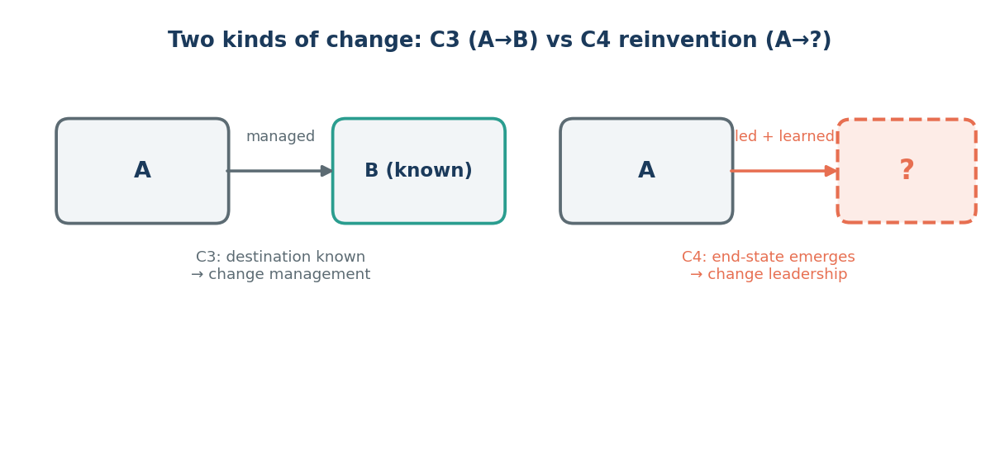
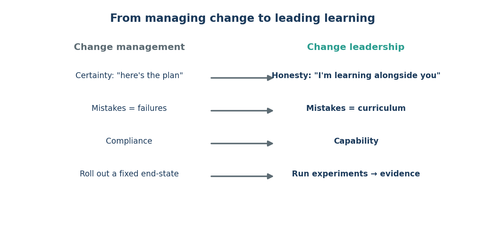

Issue 9 — From change management to change leadership
Every finance leader has run a change project. New ERP, new close calendar, new policy. The playbook is familiar: define the destination, build the plan, manage people from where they are (A) to where they need to be (B). It works because B is known. You can put it on a slide.
Agentic AI breaks that playbook, and it's worth being honest about why (Figure 9.1). This isn't a move from A to a known B. The tools change every few weeks; the best way to work with them is still being discovered; the end-state genuinely can't be drawn in advance. McKinsey calls this a different kind of change — a "C4 reinvention," a move from A into an unknown. And you cannot manage your way to a destination you can't yet see. You have to lead toward it.

What does leading look like when you can't point at B? It starts with a sentence most managers are terrified to say: "I don't know exactly where we're going, but I'm learning alongside you." That sounds like weakness in the old model. In this one, it's the most credible thing a leader can say — because it's true, and because it invites the team to learn with you instead of waiting to be told.
The stance shifts in a few concrete ways (Figure 9.2). Certainty becomes honesty. Mistakes stop being failures and become curriculum — the fumble you had with an agent last week is exactly what the team needs to hear about. Compliance ("do it because I said so") becomes capability ("let's get good at this together"). And a fixed rollout becomes a series of experiments, where each try produces evidence for the next.

This is a relief, if you let it be. You don't have to have the answers. Nobody does yet. Your job as a leader isn't to be the person who knows — it's to be the person who keeps the team learning, safe, and moving while the picture comes into focus. That's a role you can actually fill.
We're not asking anyone to fake confidence about an unknown future. We're asking leaders to trade certainty for curiosity, out loud.
Sources
- McKinsey, "How to close the agentic adoption gap" (Aug 7, 2026) — C4 reinvention (A→unknown); learning stance; experiments as evidence.